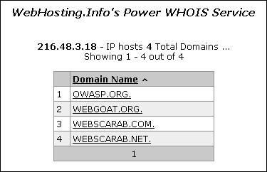

4.2.4 Enumerate Applications on Webserver (OTG-INFO-004)
Summary
A paramount step in testing for web application vulnerabilities is to find out which particular applications are hosted on a web server. Many applications have known vulnerabilities and known attack strategies that can be exploited in order to gain remote control or to exploit data. In addition, many applications are often misconfigured or not updated, due to the perception that they are only used "internally" and therefore no threat exists.
With the proliferation of virtual web servers, the traditional 1:1-type relationship between an IP address and a web server is losing much of its original significance. It is not uncommon to have multiple web sites or applications whose symbolic names resolve to the same IP address. This scenario is not limited to hosting environments, but also applies to ordinary corporate environments as well.
Security professionals are sometimes given a set of IP addresses as a target to test. It is arguable that this scenario is more akin to a penetration test-type engagement, but in any case it is expected that such an assignment would test all web applications accessible through this target. The problem is that the given IP address hosts an HTTP service on port 80, but if a tester should access it by specifying the IP address (which is all they know) it reports "No web server configured at this address" or a similar message. But that system could "hide" a number of web applications, associated to unrelated symbolic (DNS) names. Obviously, the extent of the analysis is deeply affected by the tester tests all applications or only tests the applications that they are aware of.
Sometimes, the target specification is richer. The tester may be given a list of IP addresses and their corresponding symbolic names. Nevertheless, this list might convey partial information, i.e., it could omit some symbolic names and the client may not even being aware of that (this is more likely to happen in large organizations).
Other issues affecting the scope of the assessment are represented by web applications published at non-obvious URLs (e.g.,
http://www.example.com/some-strange-URL), which are not referenced elsewhere. This may happen either by error (due to misconfigurations), or intentionally (for example, unadvertised administrative interfaces).
To address these issues, it is necessary to perform web application discovery.
Test Objectives
Enumerate the applications within scope that exist on a web server
How to Test
Black Box Testing
Web application discovery is a process aimed at identifying web applications on a given infrastructure. The latter is usually specified as a set of IP addresses (maybe a net block), but may consist of a set of DNS symbolic names or a mix of the two. This information is handed out prior to the execution of an assessment, be it a classic-style penetration test or an application-focused assessment. In both cases, unless the rules of engagement specify otherwise (e.g., “test only the application located at the URL
http://www.example.com/”), the assessment should strive to be the most comprehensive in scope, i.e. it should identify all the applications accessible through the given target. The following examples examine a few techniques that can be employed to achieve this goal.
Note: Some of the following techniques apply to Internet-facing web servers, namely DNS and reverse-IP web-based search services and the use of search engines. Examples make use of private IP addresses (such as
192.168.1.100), which, unless indicated otherwise, represent
generic IP addresses and are used only for anonymity purposes.
There are three factors influencing how many applications are related to a given DNS name (or an IP address):
1. Different base URL The obvious entry point for a web application is
www.example.com, i.e., with this shorthand notation we think of the web application originating at
http://www.example.com/ (the same applies for https). However, even though this is the most common situation, there is nothing forcing the application to start at “/”.
For example, the same symbolic name may be associated to three web applications such as:
http://www.example.com/url1 http://www.example.com/url2 http://www.example.com/url3 In this case, the URL
http://www.example.com/ would not be associated with a meaningful page, and the three applications would be “hidden”, unless the tester explicitly knows how to reach them, i.e., the tester knows
url1,
url2 or
url3. There is usually no need to publish web applications in this way, unless the owner doesn’t want them to be accessible in a standard way, and is prepared to inform the users about their exact location. This doesn’t mean that these applications are secret, just that their existence and location is not explicitly advertised.
2. Non-standard ports While web applications usually live on port 80 (http) and 443 (https), there is nothing magic about these port numbers. In fact, web applications may be associated with arbitrary TCP ports, and can be referenced by specifying the port number as follows: http[s]://www.example.com:port/. For example,
http://www.example.com:20000/.
3. Virtual hosts DNS allows a single IP address to be associated with one or more symbolic names. For example, the IP address
192.168.1.100 might be associated to DNS names
www.example.com, helpdesk.example.com, webmail.example.com. It is not necessary that all the names belong to the same DNS domain. This 1-to-N relationship may be reflected to serve different content by using so called virtual hosts. The information specifying the virtual host we are referring to is embedded in the HTTP 1.1
Host: header [1].
One would not suspect the existence of other web applications in addition to the obvious
www.example.com, unless they know of
helpdesk.example.com and
webmail.example.com.
Approaches to address issue 1 - non-standard URLs There is no way to fully ascertain the existence of non-standard-named web applications. Being non-standard, there is no fixed criteria governing the naming convention, however there are a number of techniques that the tester can use to gain some additional insight.
First, if the web server is mis-configured and allows directory browsing, it may be possible to spot these applications. Vulnerability scanners may help in this respect.
Second, these applications may be referenced by other web pages and there is a chance that they have been spidered and indexed by web search engines. If testers suspect the existence of such “hidden” applications on
www.example.com they could search using the
site operator and examining the result of a query for “site: www.example.com”. Among the returned URLs there could be one pointing to such a non-obvious application.
Another option is to probe for URLs which might be likely candidates for non-published applications. For example, a web mail front end might be accessible from URLs such as
https://www.example.com/webmail,
https://webmail.example.com/, or
https://mail.example.com/. The same holds for administrative interfaces, which may be published at hidden URLs (for example, a Tomcat administrative interface), and yet not referenced anywhere. So doing a bit of dictionary-style searching (or “intelligent guessing”) could yield some results. Vulnerability scanners may help in this respect.
Approaches to address issue 2 - non-standard ports It is easy to check for the existence of web applications on non-standard ports. A port scanner such as nmap [2] is capable of performing service recognition by means of the -sV option, and will identify http[s] services on arbitrary ports. What is required is a full scan of the whole 64k TCP port address space.
For example, the following command will look up, with a TCP connect scan, all open ports on IP
192.168.1.100 and will try to determine what services are bound to them (only
essential switches are shown – nmap features a broad set of options, whose discussion is out of scope):
nmap –PN –sT –sV –p0-65535 192.168.1.100
It is sufficient to examine the output and look for http or the indication of SSL-wrapped services (which should be probed to confirm that they are https). For example, the output of the previous command could look like:
Interesting ports on 192.168.1.100:
(The 65527 ports scanned but not shown below are in state: closed)
PORT STATE SERVICE VERSION
22/tcp open ssh OpenSSH 3.5p1 (protocol 1.99)
80/tcp open http Apache httpd 2.0.40 ((Red Hat Linux))
443/tcp open ssl OpenSSL
901/tcp open http Samba SWAT administration server
1241/tcp open ssl Nessus security scanner
3690/tcp open unknown
8000/tcp open http-alt?
8080/tcp open http Apache Tomcat/Coyote JSP engine 1.1
From this example, one see that:
• There is an Apache http server running on port 80.
• It looks like there is an https server on port 443 (but this needs to be confirmed, for example, by visiting
https://192.168.1.100 with a browser).
• On port 901 there is a Samba SWAT web interface.
• The service on port 1241 is not https, but is the SSL-wrapped Nessus daemon.
• Port 3690 features an unspecified service (nmap gives back its
fingerprint - here omitted for clarity - together with instructions to submit it for incorporation in the nmap fingerprint database, provided you know which service it represents).
• Another unspecified service on port 8000; this might possibly be http, since it is not uncommon to find http servers on this port. Let's examine this issue:
$ telnet 192.168.10.100 8000
Trying 192.168.1.100...
Connected to 192.168.1.100.
Escape character is '^]'.
GET / HTTP/1.0
HTTP/1.0 200 OK
pragma: no-cache
Content-Type: text/html
Server: MX4J-HTTPD/1.0
expires: now
Cache-Control: no-cache
<html>
...
This confirms that in fact it is an HTTP server. Alternatively, testers could have visited the URL with a web browser; or used the GET or HEAD Perl commands, which mimic HTTP interactions such as the one given above (however HEAD requests may not be honored by all servers).
• Apache Tomcat running on port 8080.
The same task may be performed by vulnerability scanners, but first check that the scanner of choice is able to identify http[s] services running on non-standard ports. For example, Nessus [3] is capable of identifying them on arbitrary ports (provided it is instructed to scan all the ports), and will provide, with respect to nmap, a number of tests on known web server vulnerabilities, as well as on the SSL configuration of https services. As hinted before, Nessus is also able to spot popular applications or web interfaces which could otherwise go unnoticed (for example, a Tomcat administrative interface).
Approaches to address issue 3 - virtual hosts There are a number of techniques which may be used to identify DNS names associated to a given IP address
x.y.z.t.
DNS zone transfers This technique has limited use nowadays, given the fact that zone transfers are largely not honored by DNS servers. However, it may be worth a try. First of all, testers must determine the name servers serving
x.y.z.t. If a symbolic name is known for
x.y.z.t (let it be
www.example.com), its name servers can be determined by means of tools such as
nslookup,
host, or
dig, by requesting DNS NS records.
If no symbolic names are known for
x.y.z.t, but the target definition contains at least a symbolic name, testers may try to apply the same process and query the name server of that name (hoping that
x.y.z.t will be served as well by that name server). For example, if the target consists of the IP address
x.y.z.t and the name
mail.example.com, determine the name servers for domain
example.com.
The following example shows how to identify the name servers for www.owasp.org by using the host command:
$ host -t ns www.owasp.org
www.owasp.org is an alias for owasp.org.
owasp.org name server ns1.secure.net.
owasp.org name server ns2.secure.net.
A zone transfer may now be requested to the name servers for domain
example.com. If the tester is lucky, they will get back a list of the DNS entries for this domain. This will include the obvious
www.example.com and the not-so-obvious
helpdesk.example.com and
webmail.example.com (and possibly others). Check all names returned by the zone transfer and consider all of those which are related to the target being evaluated.
Trying to request a zone transfer for owasp.org from one of its name servers:
$ host -l www.owasp.org ns1.secure.net
Using domain server:
Name: ns1.secure.net
Address: 192.220.124.10#53
Aliases:
Host www.owasp.org not found: 5(REFUSED)
; Transfer failed.
DNS inverse queries This process is similar to the previous one, but relies on inverse (PTR) DNS records. Rather than requesting a zone transfer, try setting the record type to PTR and issue a query on the given IP address. If the testers are lucky, they may get back a DNS name entry. This technique relies on the existence of IP-to-symbolic name maps, which is not guaranteed.
Web-based DNS searches This kind of search is akin to DNS zone transfer, but relies on web-based services that enable name-based searches on DNS. One such service is the
Netcraft Search DNS service, available at
http://searchdns.netcraft.com/?host. The tester may query for a list of names belonging to your domain of choice, such as
example.com. Then they will check whether the names they obtained are pertinent to the target they are examining.
Reverse-IP services Reverse-IP services are similar to DNS inverse queries, with the difference that the testers query a web-based application instead of a name server. There are a number of such services available. Since they tend to return partial (and often different) results, it is better to use multiple services to obtain a more comprehensive analysis.
Domain tools reverse IP:
http://www.domaintools.com/reverse-ip/ (requires free membership)
MSN search:
http://search.msn.com syntax: "ip:x.x.x.x" (without the quotes)
Webhosting info:
http://whois.webhosting.info/ syntax:
http://whois.webhosting.info/x.x.x.x DNSstuff:
http://www.dnsstuff.com/ (multiple services available)
http://www.net-square.com/mspawn.html (multiple queries on domains and IP addresses, requires installation)
tomDNS:
http://www.tomdns.net/index.php (some services are still private at the time of writing)
SEOlogs.com:
http://www.seologs.com/ip-domains.html (reverse-IP/domain lookup)
The following example shows the result of a query to one of the above reverse-IP services to 216.48.3.18, the IP address of www.owasp.org. Three additional non-obvious symbolic names mapping to the same address have been revealed.

Googling Following information gathering from the previous techniques, testers can rely on search engines to possibly refine and increment their analysis. This may yield evidence of additional symbolic names belonging to the target, or applications accessible via non-obvious URLs.
For instance, considering the previous example regarding
www.owasp.org, the tester could query Google and other search engines looking for information (hence, DNS names) related to the newly discovered domains of
webgoat.org,
webscarab.com, and
webscarab.net.
Googling techniques are explained in
Testing: Spiders, Robots, and Crawlers.
Gray Box Testing
Not applicable. The methodology remains the same as listed in Black Box testing no matter how much information the tester starts with.
Tools
• DNS lookup tools such as
nslookup,
dig and similar.
• Search engines (Google, Bing and other major search engines).
• Specialized DNS-related web-based search service: see text.
• Nmap -
http://www.insecure.org • Nessus Vulnerability Scanner -
http://www.nessus.org• Nikto -
http://www.cirt.net/nikto2 References
Whitepapers [1]
RFC 2616 – Hypertext Transfer Protocol – HTTP 1.1